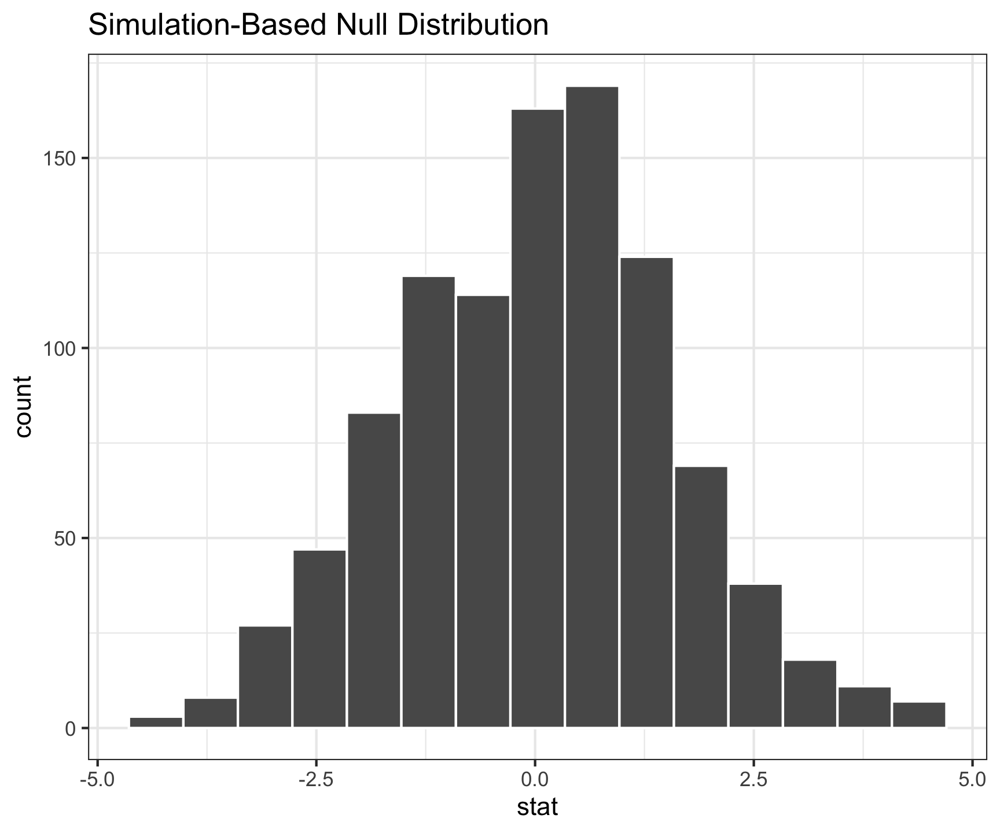
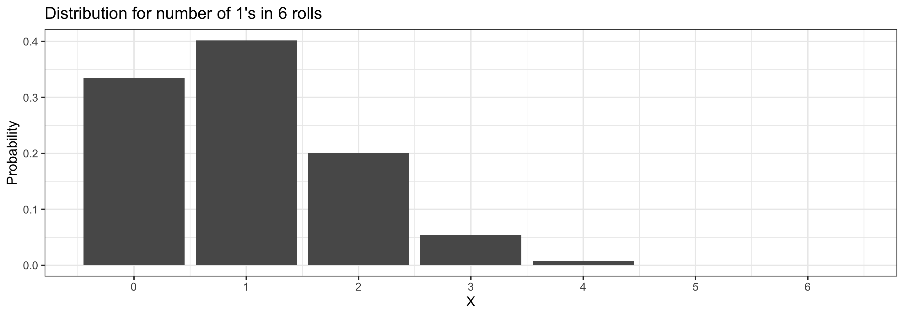
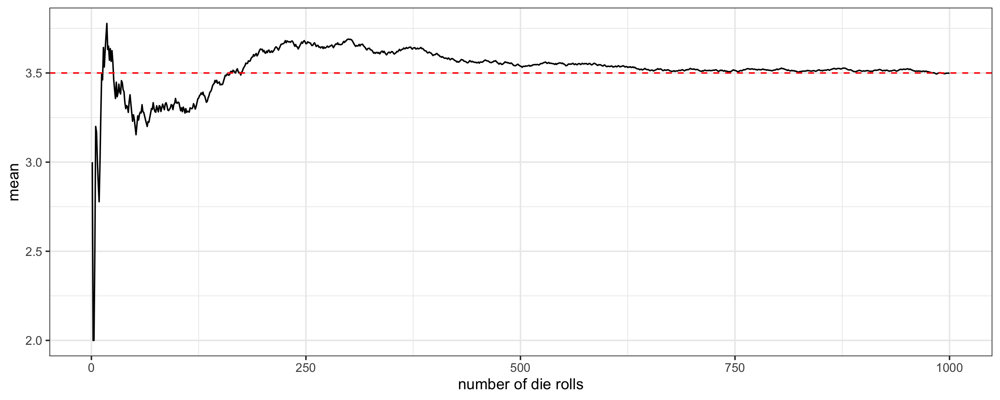

Random Variables I
Grayson White
Math 141
Week 10 | Fall 2025
Goals for Today
- Motivate the need for probability models and random variables
- Define and introduce random variables
Annoucements
- Extended deadline for midterm revisions: Thursday the 13th at 8pm
Statistical Inference Zoom Out – Estimation

Question: How did folks do inference before computers?
Statistical Inference Zoom Out – Testing

Question: How did folks do inference before computers?
Statistical Inference Zoom Out – Estimation

Question: How did folks do inference before computers?
Statistical Inference Zoom Out – Testing

Question: How did folks do inference before computers?
This means we need to learn about probability models!
Probability Models
“All models are wrong but some are useful.” – George Box
Question: How can we use theoretical probability models to approximate our (sampling) distributions?
Before we can answer that question and apply the models, we need to learn about the theoretical probability models themselves.
Random Variables
Definitions
A random variable is a numeric quantity whose value depends on the result of a random process.
- Capital letters at the end of the alphabet \((W,X,Y,Z)\) to denote random variables
- Lowercase letters \((w,x,y,z)\) to denote the particular values of a random variable
- e.g., \(X=x\)
- Equations to express events associated to random variables.
- e.g., “\(X=5\)” represents the event “The random variable \(X\) takes the value \(5\)”.
- Events associated to variables have probabilities of occurring.
- e.g., \(P(X=5) = 0.5\) means \(X\) has probability 0.5 of taking the value \(5\).
Types of Random Variables
There are two main types of random variables:
Discrete variables can take only finitely many different values.
Continuous variables can take values equal to any real number in an interval.
Examples of discrete variables:
- The number of credits a randomly chosen Reed student is taking.
- The number of vegetarians in a random sample of 10 people.
- The result of a coin flip
Examples of continuous variables:
- The temperature of my office at a particular time of the day.
- The amount of time it takes a radioactive particle to decay.
Today, we’ll focus on discrete random variables
For a discrete random variable, care about its:
Distribution: \(p(x) = P(X = x)\)
Center – Mean:
\[ \mu = \sum x p(x) \]
- Spread – Variance & Standard Deviation:
\[ \sigma^2 = \sum (x - \mu)^2 p(x) \]
\[ \sigma = \sqrt{ \sum (x - \mu)^2 p(x)} \]
The Distribution of a Random Variable
Random variables have distributions, which tell us…
- the values the variable can take, and the probability the variable takes those values.
Example: I play a casino game, where that the amount of money I win (in dollars) has the following distribution:
| Winnings | $5 | $10 | $20 | $50 |
|---|---|---|---|---|
| Probability | .3 | .4 | .2 | .1 |
Suppose instead that I have a purse filled with the following 100 bills:
| Type | $5 | $10 | $20 | $50 |
|---|---|---|---|---|
| Frequency | 30 | 40 | 20 | 10 |
Playing this casino game is very similar to drawing a random bill from the purse!
Visualizing Discrete Distributions
We often use bar charts to visualize the distribution of discrete random variables.
- Suppose a fair 6-sided die is rolled 6 times. Let \(X\) be the number of \(1\)s rolled. The distribution of \(X\) is given by:

Heights of bars are probabilities
Expected Value and Variance
Expected Value
Informally: The expected value is the average value the random variable takes.
- If \(X\) represents the number of Heads when flipping a fair coin, its expected value is 0.5
Formally: The expected value (or mean) of a discrete random variable \(X\) is \[ E[X] = x_1 P(X = x_1) + x_2 P(X = x_2) + \dots x_n P(X = x_n) = \sum_{i =1}^n x_i P(X = x_i) \] where \(x_1, \dots, x_n\) are all the values X could potentially take.
Expected Value
Recall the example: if \(X\) represents the number of Heads when flipping a fair coin, its expected value is 0.5
\[ \begin{align} E[X] &= 0 P(X=0) + 1 P(X=1)\\ &= 0(0.5) + 1(0.5) \\ &= 0.5 \end{align} \]
- The expected value of \(X\) is a weighted average of the values \(X\) can take, where weights are probabilities.
Practice
\[ E[X] = x_1 P(X = x_1) + x_2 P(X = x_2) + \dots x_n P(X = x_n) = \sum_{i =1}^n x_i P(X = x_i) \]
Suppose we have a data set consisting of 10 values: \(\{1,1,2,2,2,2,3,4,5,5\}\).
- Let \(X\) be a value chosen from this data set randomly.
- What is the expected value of \(X\)?
02:00
Practice (Answers)
\[ E[X] = x_1 P(X = x_1) + x_2 P(X = x_2) + \dots x_n P(X = x_n) = \sum_{i =1}^n x_i P(X = x_i) \]
Suppose we have a data set consisting of 10 values: \(\{1,1,2,2,2,2,3,4,5,5\}\).
- Let \(X\) be a value chosen from this data set randomly.
- What is the expected value of \(X\)?
\[ \begin{align} E[X] =& 1 P(X = 1) + 2 P(X = 2) + 3 P(X =3) + 4 P(X = 4) + 5 P(X = 5) \\ =& 1 \frac{2}{10} + 2 \frac{4}{10} + 3 \frac{1}{10} + 4 \frac{1}{10} + 5 \frac{2}{10} \\ =& \frac{27}{10} \end{align} \]
The Law of Large Numbers, again
Previously, we said that by the Law of Large numbers, the proportion of times an outcome occurs in a long sequence of trials is close to the probability for that outcome.
This is a generalization:
Theorem: The Law of Large Numbers
Let \(X\) be a random variable.
Suppose we observe the random variable \(n\) times, \(x_1,x_2,\dots,x_n\).
Let \(\bar{x}_n\) denote the mean of our \(n\) observations of \(X\).
Then, as \(n\) becomes large, \(\bar{x}_n\) will approach the expected value \(E[X]\) of the random variable \(X\).
A Roll of the Die
Suppose we roll a fair 6-sided die. What is the expected value of the result?
- Let’s roll the same die 1000 times and keep track of the running mean of the results…

We can see that the expected value is \(3.5\)
Variance and Standard Deviation
The variance of a discrete random variable \(X\) with mean \(E(X) = \mu\) is \[ \begin{align} \mathrm{Var}(X) =& (x_1 - \mu)^2 P(X = x_1) + (x_2- \mu)^2 P(X = x_2) + \dots + (x_n-\mu)^2 P(X = x_n) \\ =& \sum_{i =1}^n (x_i-\mu)^2 P(X = x_i) \end{align} \]
The variance of \(X\) is the sum the squared deviations of \(X\) from its mean \(\mu\), weighted by the corresponding probabilities.
We also define the standard deviation of a random variable \(X\) to be \[ \textrm{SD}(X) = \sqrt{\mathrm{Var}(X)} \]
We often use:
- \(\sigma^2\) to denote the variance of a variable
- \(\sigma\) to denote the standard deviation
Variance and Standard Deviation
\[ \begin{align} \mathrm{Var}(X) =& (x_1 - \mu)^2 P(X = x_1) + (x_2- \mu)^2 P(X = x_2) + \dots + (x_n-\mu)^2 P(X = x_n) \\ =& \sum_{i =1}^n (x_i-\mu)^2 P(X = x_i) \end{align} \]
Suppose we have a data set consisting of 5 values: \(\{1,1,3,5, 5\}\). Let \(X\) be a value chosen from this data set randomly. What is the variance of \(X\)?
- Note that \(E(X) = \mu = 3\)
\[ \begin{align} \mathrm{Var}(X) =& (1 - 3)^2 P(X = 1) + (3 - 3)^2 P(X = 3) + (5 - 3)^2 P(X =5) \\ =& (-2)^2 \frac{2}{5} + (0)^2 \frac{1}{5} + 2^2 \frac{2}{5} = \frac{16}{5} \end{align} \]
03:00
Practice: One Coin Flip
Consider a random variable \(X\) which is the number of heads in a single coin flip.
Q: What are the possible values for \(X\)? What are the probabilities each value of \(X\)?
- \(X = 1\) (H) with \(P(X=1) = \frac{1}{2}\)
- \(X = 0\) (T) with \(P(X=0) = \frac{1}{2}\)
Q: Compute the expected value and variance for \(X\) (the number of heads in a single coin flip)
\[ E[X] = (0)\frac{1}{2} + (1)\frac{1}{2} = \frac{1}{2} \]
\[ Var[X] = (0-1/2)^2\frac{1}{2} + (1-1/2)^2\frac{1}{2} = \frac{1}{4} \]
Linearity of Expected Value
Theorem: Expectation of Sum
Let \(X\) and \(Y\) be random variables. Then \[ E(X + Y) = E(X) + E(Y) \]
- e.g., If \(X\) is the face of one die roll, and \(Y\) is the face of another die roll, then \(X + Y\) would be the sum of the faces. And: \[ E(X + Y) = E(X) + E(Y) = 3.5 + 3.5 = 7 \]
Linearity of Expected Value
Theorem: Scalar Multiplication with Expectation
Let \(X\) be a random variable, and let \(c\) be a number. Then \[ E(cX) = cE(X) \]
- e.g., We’re rolling a die, and we’ll make $5 times the number we roll – what are our expected earnings?
\[ X = \text{face of die roll} \quad \quad \quad E(5 X) = 5 E(X) = 5(3.5) = 17.5 \]
Variance of Sums and Scalar Multiplication
Theorem: Variance of Sum
Let \(X\) and \(Y\) be random variables. Additionally, let \(X\) and \(Y\) be independent. Then \[ \mathrm{Var}(X + Y) = \mathrm{Var}(X) + \mathrm{Var}(Y) \]
- Note that \(X\) and \(Y\) must be independent for the above!
Theorem: Scalar Multiplication with Variance
Let \(X\) be a random variable, and let \(c\) be a number. Then \[ \mathrm{Var}(cX) = c^2\mathrm{Var}(X) \]
- We get the \(c^2\) because variances look at squared differences from the mean
Practice: Two Coin Flips
Now let \(Y\) be the number of heads in two coin flips.
Q: What are the possible values for \(Y\)? What are the probabilities each value of \(Y\)?
- \(Y = 0\) (TT) with \(P (Y = 0) = \frac{1}{4}\)
- \(Y = 1\) (HT or TH) with \(P (Y = 1) = \frac{1}{2}\)
- \(Y = 2\) (HH) with \(P (Y = 2) = \frac{1}{4}\)
Q: Compute the expected value and variance for \(Y\) (the number of heads in two coin flips.)
We could use the definitions of expected value and variance directly…
\[ E[Y] = (0)\frac{1}{4} + (1)\frac{1}{2} +(2)\frac{1}{4} = 1 \]
\[ Var[Y] = (0-1)^2\frac{1}{4} + (1-1)^2\frac{1}{2}+ (2-1)^2\frac{1}{4}= \frac{1}{2} \]
Practice: Two Coin Flips
…or, we could use our rules for expected value and variance:
\[Y = X_1 + X_2\] where \(X_1\) and \(X_2\) are two independent versions of our random variable, \(X\).
Thus,
\[ E[Y] = E[X_1] + E[X_2] = 0.5 + 0.5 = 1 \]
\[ Var[Y] = Var[X_1] + Var[X_2] = 0.25+ 0.25 = 0.5 \]
That’s a lot simpler!
Activity
What about 23 coin tosses?
Let \(Z\) be the number of heads in \(23\) independent coin tosses.
Q: What is \(E(Z)\)?
Q: What is \(\mathrm{Var}(Z)\)?
Q: Suppose \(W\) represents the number of heads in \(n\) independent coin tosses. What is \(E(W)\) and \(\mathrm{Var}(W)\)?
05:00
Activity: Answers
Let \(Z\) be the number of heads in \(23\) independent coin tosses.
Q: What is \(E(Z)\)?
- Let \(X_1\) = Heads on 1st toss, \(\dots\) , \(X_{23}\) = Heads on \(23\)rd toss: \[ E(Z) = E(X_1) + \dots + E(X_{23}) = 0.5+\dots+0.5 = 23(0.5) \]
Q: What is \(\mathrm{Var}(Z)\)?
\[ \mathrm{Var}(Z) = \mathrm{Var}(X_1) + \dots + \mathrm{Var}(X_{23}) = 0.25+\dots+0.25 = 23(0.25) \]
Q: Suppose \(W\) represents the number of heads in \(n\) independent coin tosses. What is \(E(W)\) and \(\mathrm{Var}(W)\)?
- \(E(W) = nE(X_1) = (n)(0.5)\)
- \(\mathrm{Var}(W) = n\mathrm{Var}(X_1) = (n)(0.25)\)
Next time:
- We’ll define some specific named random variables!